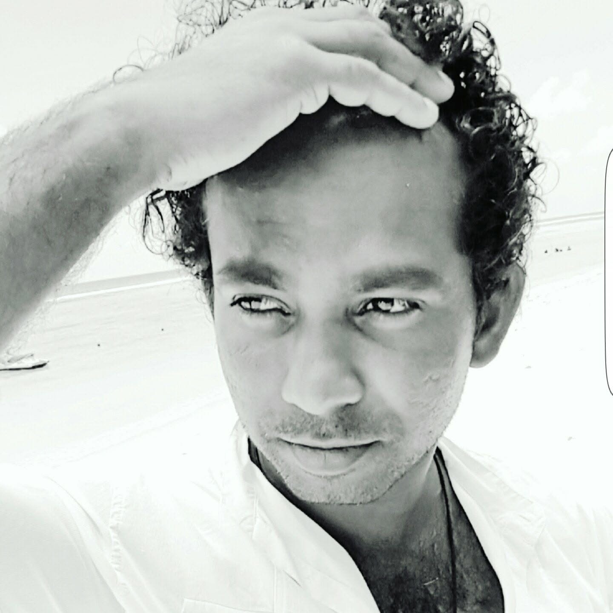

Where the story starts
The eldest child of the family, raised on schoolyard rugby and cricket pitches. Under-13 through XV rugby at Isipathana College, three age-group cricket teams, and a sixteen-year-old selling books door to door before finding his bearing at Colombo International Nautical and Engineering College.